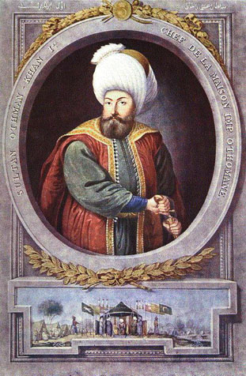

|
 |
Osman Gazi (1299 - 1326) Osmanlı Devleti'nin kurucusu olan Osman Gazi, 1258'de, Sögüt'te doğdu. Babası Ertugrul Gazi, Annesi Hayme Hatun'dur. Osman Gazi, uzun boylu, yuvarlak yüzlü, esmer tenli, ela gözlü ve kalın kaslıydı. Omuzları arası oldukça geniş, vücudunun belden yukarı kısmı, aşağı kısmına oranla daha uzundu. Başına kırmızı çuhadan yapılmış Çagatay tarzında Horasan tacı giyerdi. İç ve dış elbiseleri geniş yenliydi. Osman Gazi değerli bir devlet adamıydı. Dürüst, tedbirli, cesur, cömert ve adalet sahibiydi. Fakirlere yedirip, onları giydirmeyi çok severdi. Üzerindeki elbiseye kim biraz dikkatlice baksa, hemen çıkartıp ona hediye ederdi. Her ikindi vakti, evinde kim varsa onlara ziyafet verirdi. Osman Gazi, 1281 yılında Sögüt'te, Kayı Boyu'nun yönetimine geçtiginde henüz 23 yaşındaydı. Ata binmekte, kılıç kullanmakta ve savaşmakta çok ustaydı. Aşiretin ileri gelenlerinden, Ömer Bey'in kızı Mal Hatun ile evlendi ve bu evlilikten ileride Osmanlı Devleti'nin başına geçecek olan oğlu Orhan Gazi doğdu. Sögüt'te temelleri atılan, altı yüzyıllık bir tarih diliminde ve üç kıtada hüküm sürecek olan Osmanlı Devleti'nin kurucusu Osman Gazi, 1326'da Bursa'da Nikris (goutte) hastalığından öldü. |